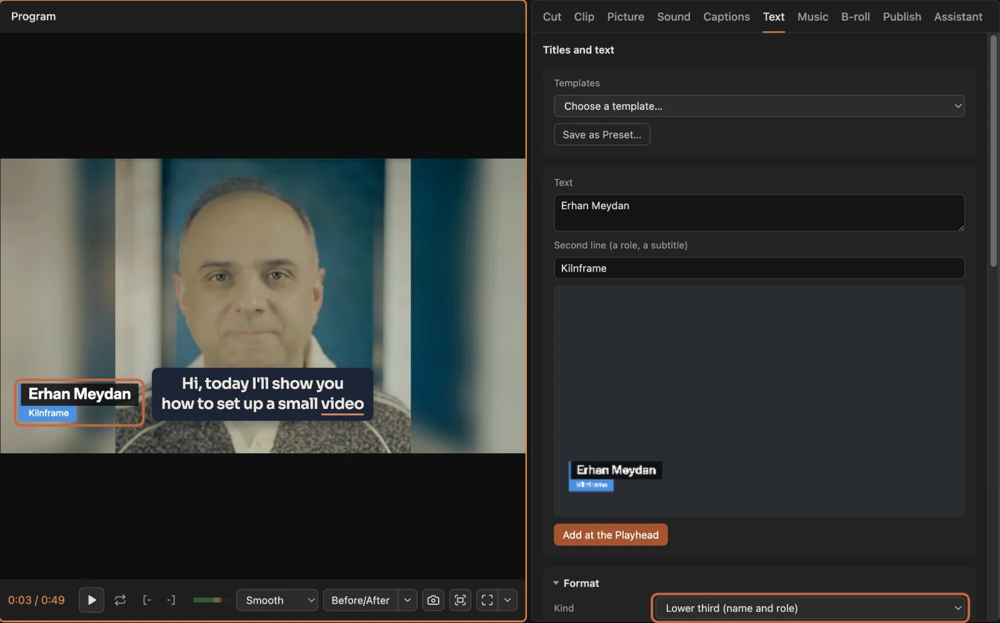
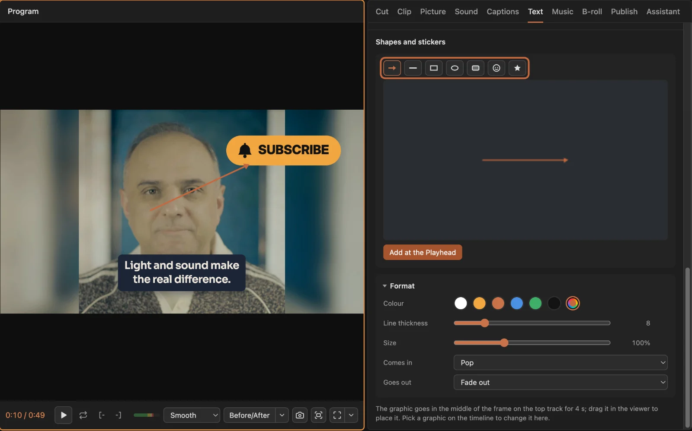

Text, shapes and stickers
The Text tab makes titles and graphics: a name and role, a headline, a quote, an arrow, a Subscribe button. Each goes on the top track at the playhead, for 4 seconds; drag its edges on the timeline to change that.

Titles and text
- Start from a template, or notTemplates: Built in ones such as Name that slides in, Headline typed on, Quote or Chapter card, and Yours.
- Pick its kindKind: Headline, Lower third (name and role), Words in a box, Corner tag, Callout (a box with a pointer), Quote, Subscribe button, Chapter card or Numbered list.
- Write itText, and a second line where the kind has one (a role, who said it, the chapter number). Place: Top, Middle or Bottom; Size, Colour and Font.
- Choose how it movesComes in: at once, fade in, fade up, pop, slide in from the left, type on letter by letter, word by word. Goes out: at once, fade out, fade down, pop, slide out to the left.
- Add itAdd at the Playhead.
Style adds an outline, a shadow, a box behind, letter spacing and alignment. Save as Preset… keeps it under Yours.
To change a title, pick it on the timeline: the tab shows it, and Update Title applies the change. You can also write a title straight in the viewer with the Text tool (⇧ T) and double-click a title to change its words.
Shapes and stickers
Shapes and stickers: an Arrow, a Line, a Box, an Ellipse, a Highlight box, an Emoji, or a Sticker such as Subscribe button, Like or Bell. Set its colour, Line thickness or Size, and press Add at the Playhead. It goes in the middle of the frame; drag it in the viewer to place it.

Your own fonts and brand colours can come from a brand kit (Brand kits and fonts).